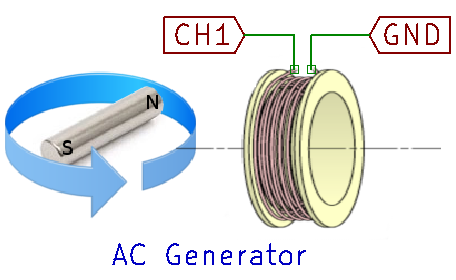

AC Generator
Make an AC generator using a magnet and a coil

Make the connections to the solenoid as shown in the figure.
Now rotate a magnet on the plane containing its magnetic axis, and bring the solenoid close to it such that its axis is also parallel to this plane. Use the picture shown as a reference.
Observe the plot of the induced EMF, and calculate its time period. This time period should correspond to the RPM of the magnet.
You may also mount the magnet on a dc motor in order to rotate it at a fairly constant speed.
Now monitor the induced waveform using the oscilloscope, and use the sine fit function to extract
the frequency of the waveform. This should correspond with the rotational frequency of the magnet
Use the stroboscopic effect to verify that the motor is indeed spinning at this frequency.